Halloween 1-5
Dolby Atmos upmix and restoration for Shout! Factory release
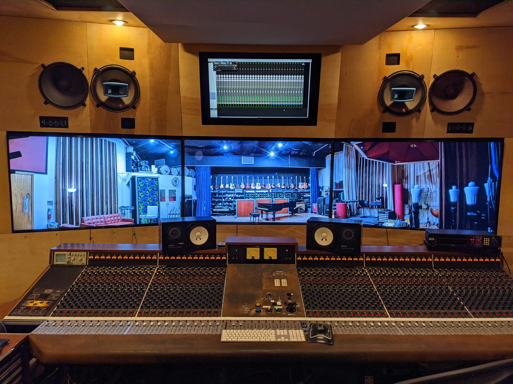
Services
Our chief engineer Stefan’s trained ears, artistry, and engineering prowess will make your artistic vision come alive. Whether you want to make a film, a record, a video game, a podcast, or any other content, you can trust that you are in good hands.
A well-crafted Dolby Atmos mix will immerse the listener in a 3D soundscape. Helicopters flying overhead, spaceships whizzing around and behind, explosions booming below. We can deliver any flavor you like: DAMF, ADM BWF, IMF IAB (MXF), RPL, discrete WAV stems, M&Es, printmasters in 9.1.6 down to stereo, tweaked to your liking.
Dolby Atmos upmix and restoration for Shout! Factory release
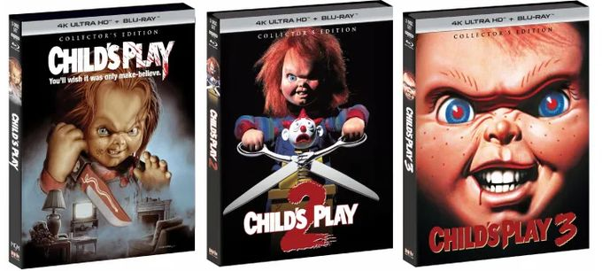
Dolby Atmos upmix and restoration for Shout! Factory release
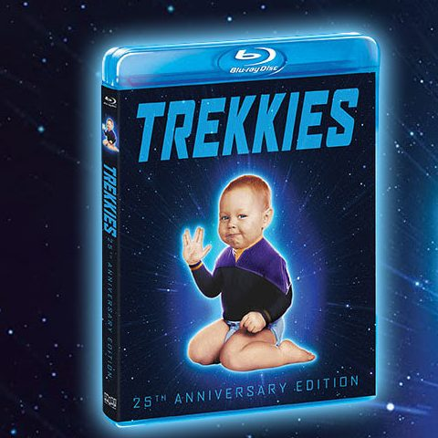
5.1 upmix and restoration
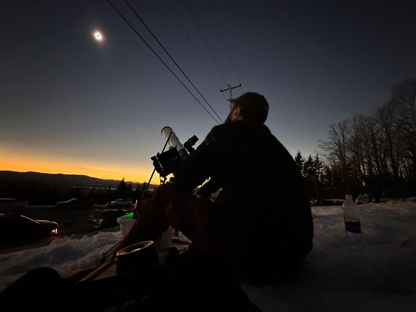
Dolby Atmos Mix
Dialog, music, and effects will be meticulously edited to your liking. Issues you didn’t think could be fixed in post can be addressed. Your mixer will appreciate the organized and clean session delivery, minimizing downtime and maximizing creative freedom.
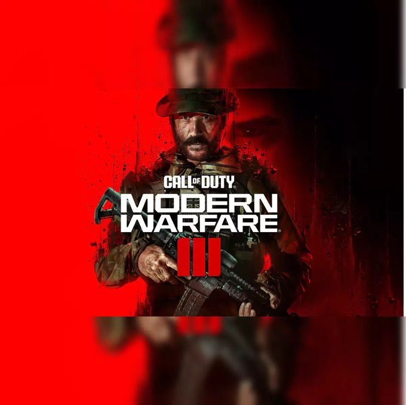
Dialog Editorial
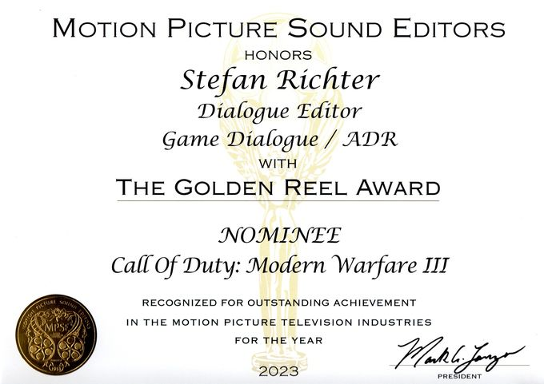
Call of Duty: Modern Warfare III
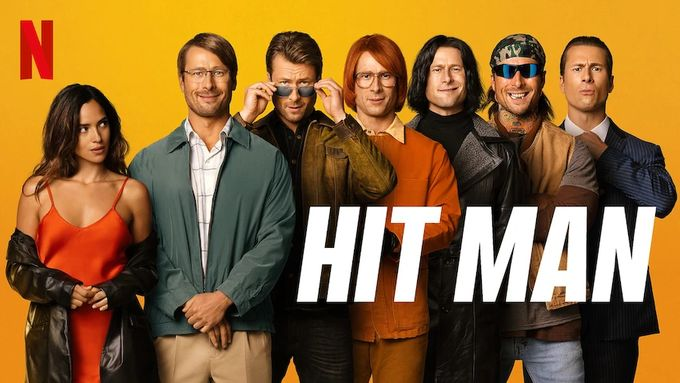
M&E QC and Laybacks
Want to breathe new life into your old recordings? We have years of experience restoring archival material and bringing it up to modern standards. Everything from noise, distortion, or click repair to Atmos upmixing can be achieved with the latest tools and impressive results.
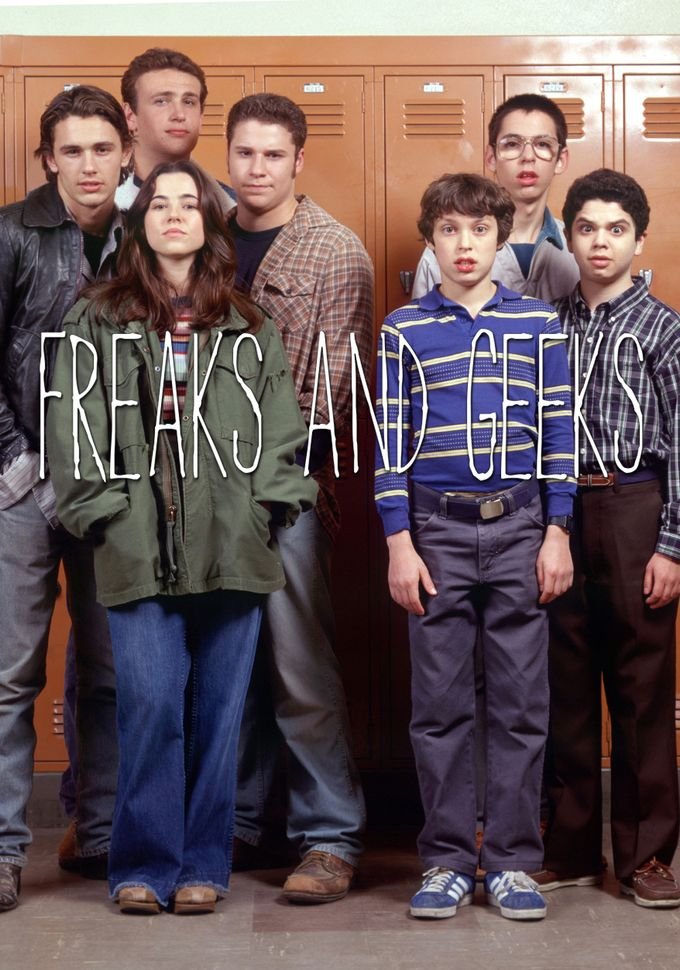
Music replacement and restoration
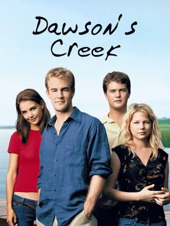
Music replacement and restoration
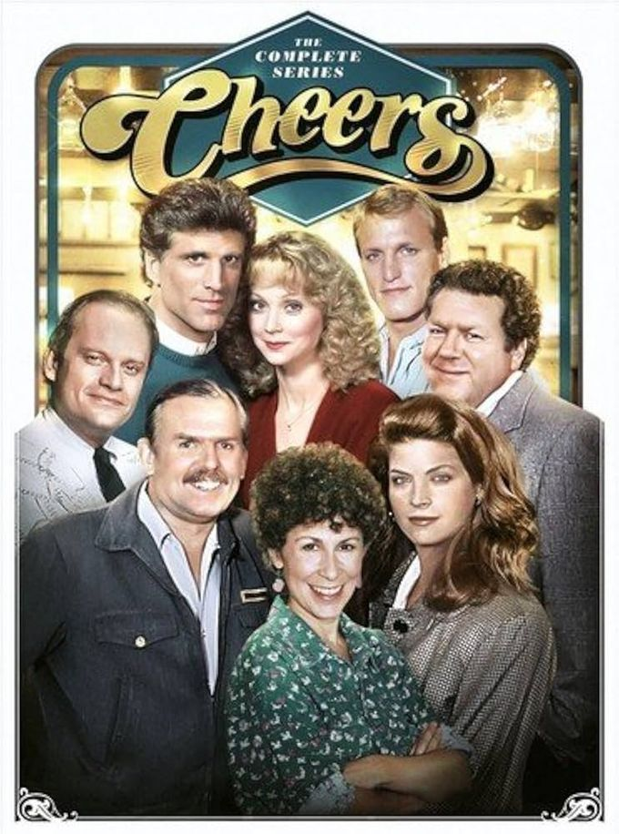
Music replacement and restoration
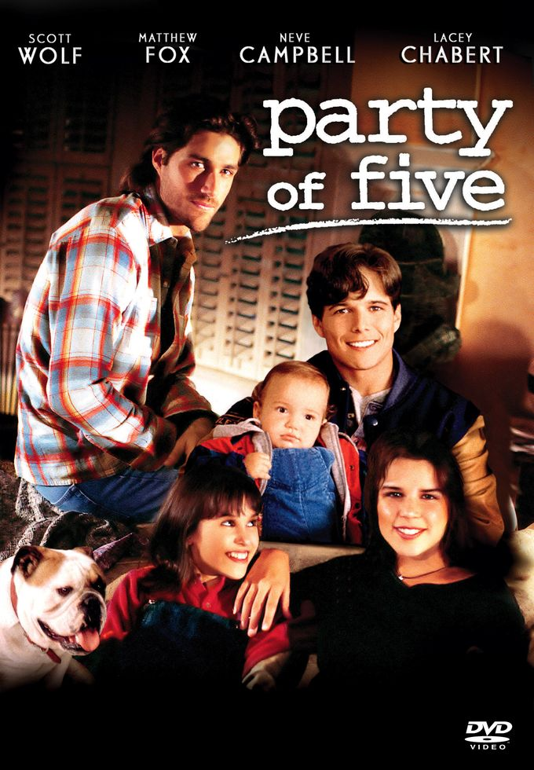
Music replacement and restoration
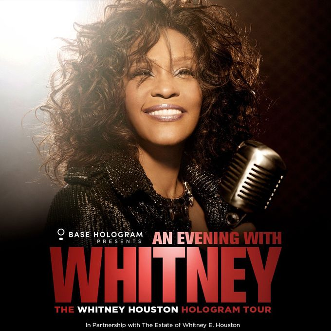
Vocal isolation for hologram concert
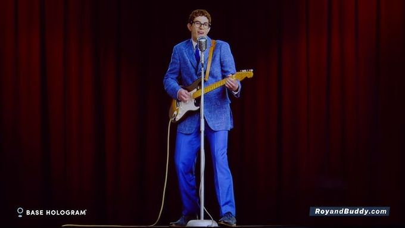
Vocal isolation for hologram concert (Buddy Holly)
Need to record ADR/dubbing for your film, a band for your record, dialog for AI training? We have experience in every area and can ensure you get the quality you’re looking for. We get it right from the start and never leave issues behind to be “fixed in post.”
English dub recordist/editor
English dub recordist/editor
Music was Stefan’s first love and what got him into audio in the first place. Starting as a guitar player, then moving on to drums, bass, keyboards, and even tuba, he has the musical ear you can trust. His technical knowledge does not get in the way of his artistic approach. If you need someone to produce, engineer, mix, or perform on your record, look no further.
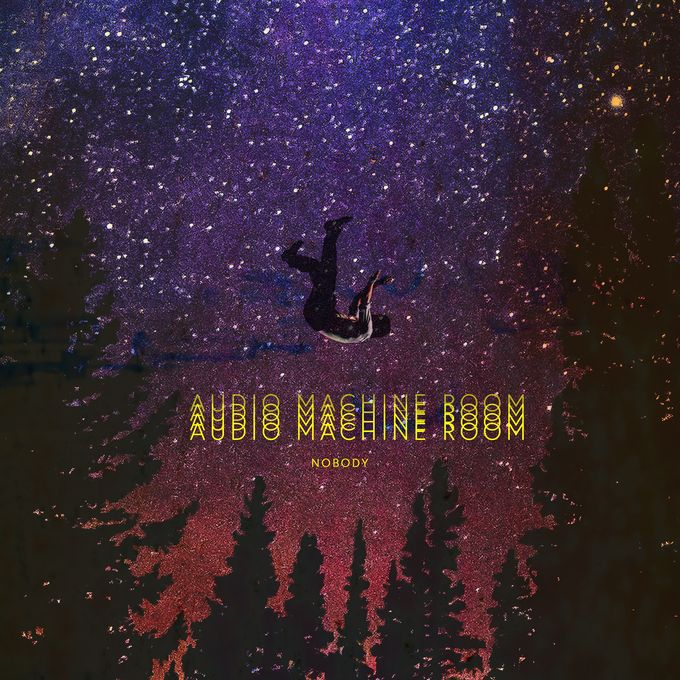
Stefan’s band for which he wrote, performed, recorded, edited, and mixed most of what you hear.
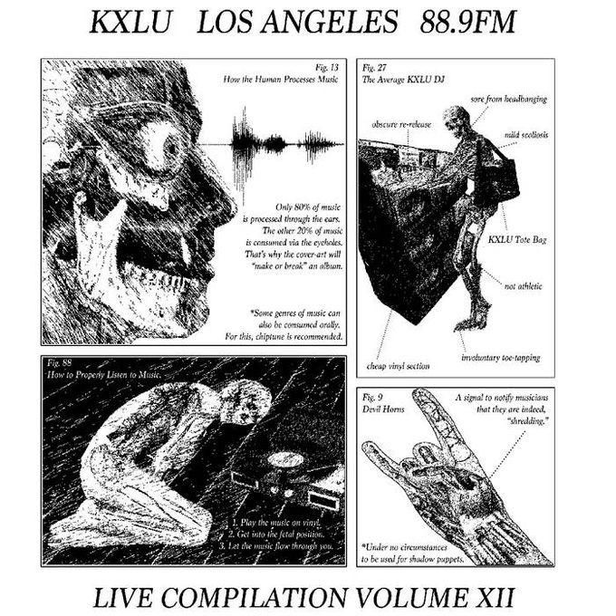
Selections of recordings from Stefan’s tenure as KXLU Production Director (2014-2016). Recorded, edited, and mixed for vinyl release.
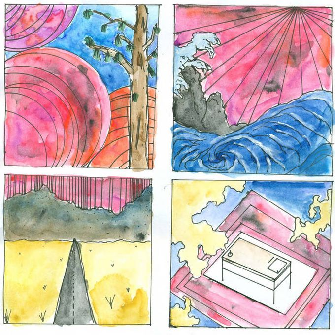
Produced, recorded, edited, and mixed
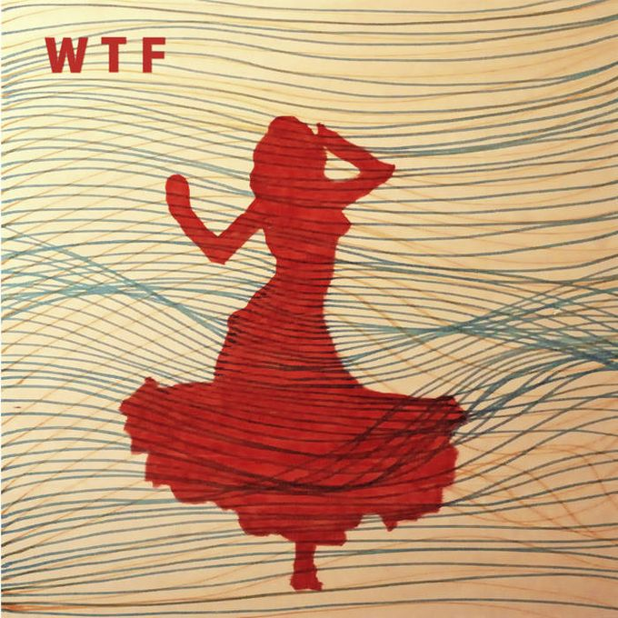
Produced, recorded, edited, mixed, and drummed